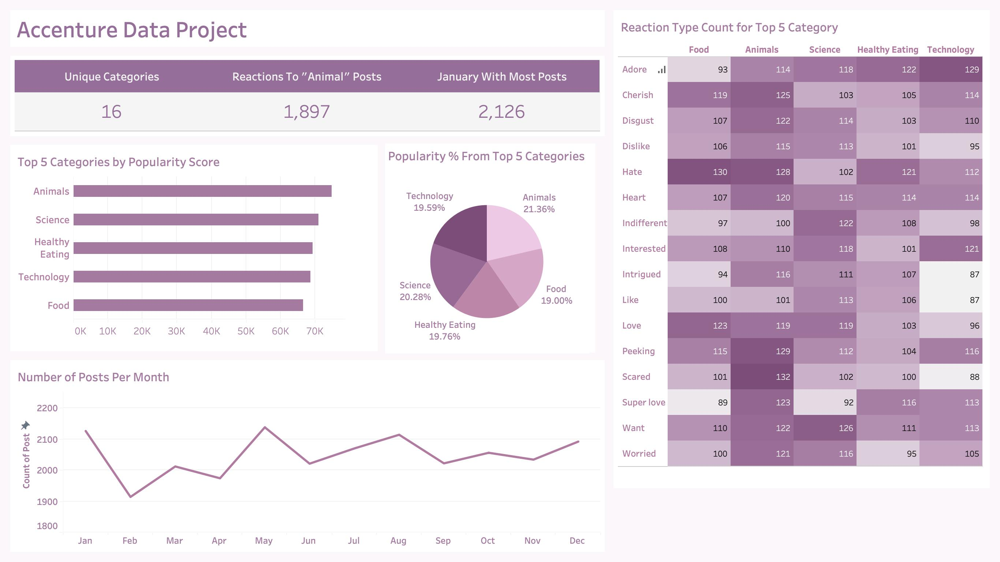

Accenture Data Project

Description
The dataset contains records of user actions and reactions, including the reaction type, date time, content type, sentiment, and ranking score. The project includes the following steps: data understanding, data cleaning, data modeling, and data analysis.
Skills
Project Understanding, Data Cleaning, Data Modeling, Data Visualization, Storytelling
Technology
Excel, Tableau
Results
- The most popular categories are animals and science, showing people enjoy "real-life" and "factual" content the most.
- Food is a common theme with the top 5 categories with "Healthy Eating" ranking the highest. This may give an indication to the audience within the user base. The company may create a campaign and work with healthy eating brands to boost user engagement.